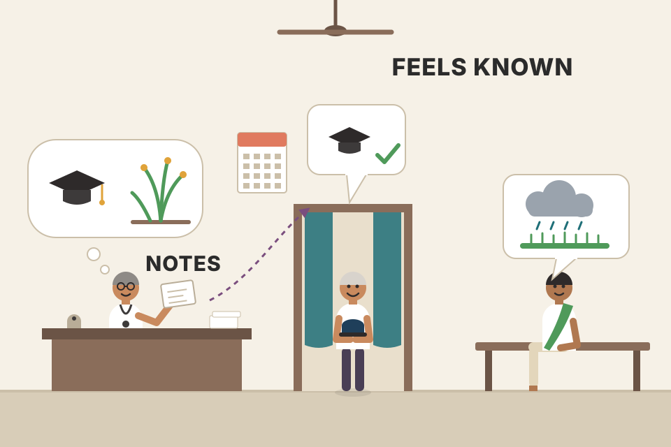
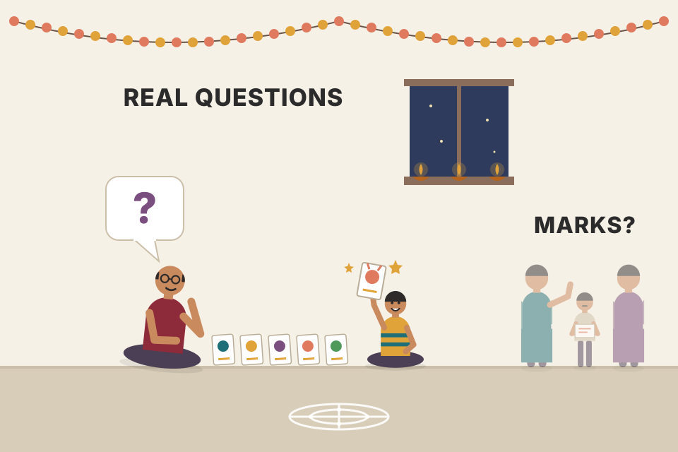
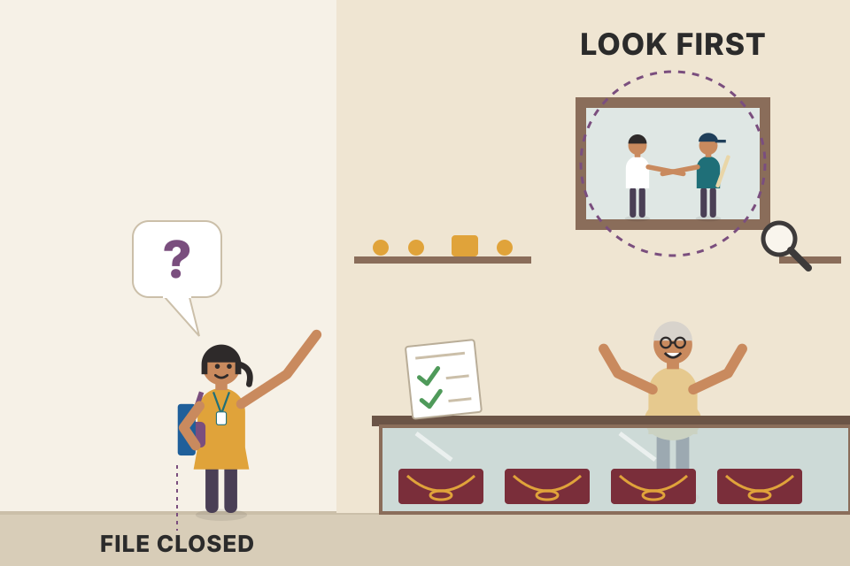
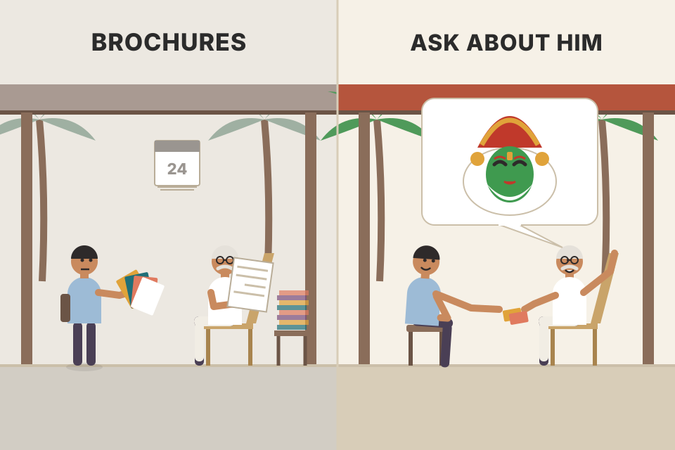
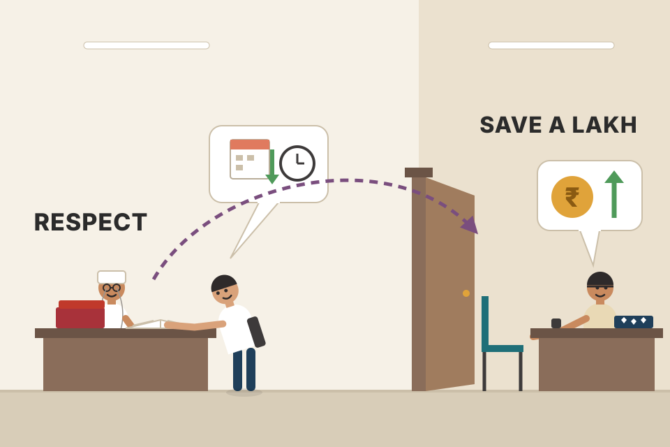
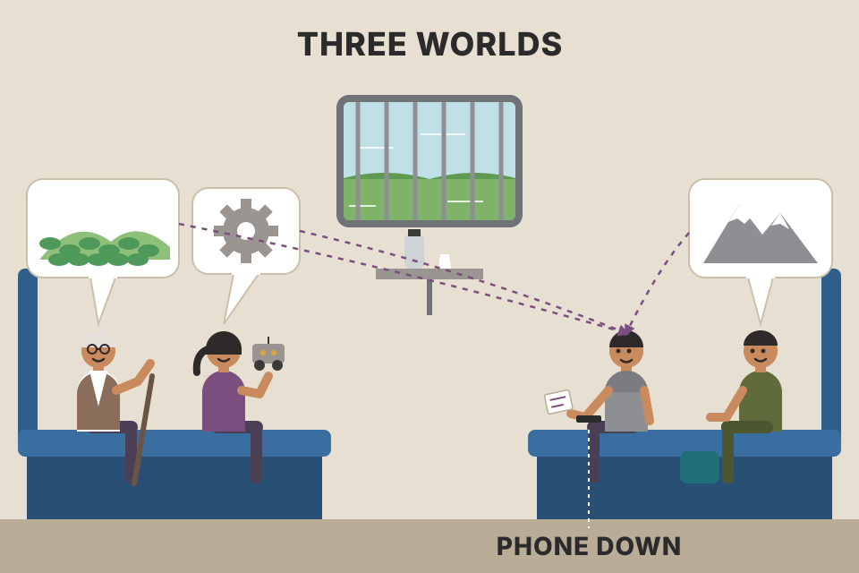

DALE CARNEGIE · HOW TO WIN FRIENDS · PART TWO · CHAPTER 5 · PDF p105–108
How to Interest People
People light up when you talk about what they care about. Find that thing first, start there, and your own request gets a far warmer hearing.
This is one of the shortest chapters in the book: four pages, five stories, one idea. Theodore Roosevelt stayed up the night before a visit to read about his guest's favourite subject. A busy New York lawyer spent an evening talking boats with an eight-year-old because boats were what the boy loved. A Scout leader got five boys sent to Europe by opening with a framed cheque, not a request. A baker who had chased one hotel's order for four years got it within days once he talked about the manager's club instead of his bread. And a job-seeker reached a hard-to-meet businessman by learning what mattered to him, and to his secretary, first. Carnegie's last word is that this pays both sides: the listener gets a richer life, not just a deal.
Principle 5 of Part Two
Talk in terms of the other person's interests.
How the chapter fits together
pdf p105 · read this first
Where it sits. This is the fifth of the six ways to make people like you in Part Two. The first four were: be genuinely interested in other people (Ch.4), smile (Ch.5), remember names (Ch.6), and be a good listener who gets others to talk about themselves (Ch.7). The sixth, make the other person feel important, comes next (Ch.9), followed by the Part Two summary list. This chapter is the step after listening: once you know what someone cares about, steer the conversation there on purpose.
The argument as a chain. The chapter is almost all stories; the logic below is how they line up.
Problemwe open with what we want→the other person stays cool
Whypeople care most about their own passions→their interest is the shortest way to their goodwill
Howfind out (Roosevelt reads up)→talk about it (the lawyer and the boats)
ProofChalif: framed chequeDuvernoy: Hotel GreetersHarriman: Funkhouser→the request comes second, and wins more
PayoffHerzig→both sides gain; your life gets bigger→Principle 5
Limitssincere curiosity, not a sales trick→links back to Ch.4 (genuine) and on to Ch.9 (sincerely)
About the title: "How to Interest People" sounds as if you must become interesting. Carnegie's answer is the reverse: you interest people by talking about what already interests them.
01 · THE OPENING STORY
Theodore Roosevelt's homework: reading up on his guest the night before
pdf p105
Carnegie opens with a reputation and then explains how it was earned.
Theodore Roosevelt26th US Presidentguests from every walk of life
The reputation. People who visited Roosevelt came away amazed at how much he seemed to know, and how widely. It did not matter who walked in: a cowboy, one of the "Rough Riders" (the volunteer cavalry he had led in the Spanish-American War), a New York party politician or a foreign diplomat. Roosevelt always seemed to have the right thing to talk about with each of them.
The secret. It was not a magical memory. It was homework: an evening of reading on the guest's favourite subject, done late at night before any expected visit. So each meeting began on the guest's home ground.
The rule Carnegie draws from it. Roosevelt knew what, Carnegie says, every leader knows: the most direct way into a person's heart is to talk about the things that person values most. Notice the two parts of what Roosevelt did:
1 · Find out
He learned what each guest cared about before the meeting. That is research, and it takes effort (a late night).
2 · Prepare and lead with it
He came ready to talk about it, so the guest felt understood from the first minute, not after an hour.
A President with an overflowing schedule still thought this was worth a late night. That is the quiet argument of the story: if it was worth his time, it is worth ten minutes of yours before a meeting that matters.
Picture it

A good family doctor in a small town greets the retired railway clerk with a question about his grandson's engineering entrance results, and the farmer with one about this year's monsoon and his paddy. He did not become an expert in exams or rice; he glanced at his notes from the last visit before calling each patient in. Each one walks in feeling known.
Where it breaks: the doctor sees the same patients for years, so the notes build up naturally. Roosevelt often met people once, so he had to do fresh homework each night. Most of your work meetings are in between, which is why a quick look at someone's recent work before you meet them is the realistic version.
What's happening behind it
From the book: what a person treasures is where their attention and feelings already are. Start there and you do not have to pull them toward you; they come forward on their own. Roosevelt's homework simply removed the slow, awkward search for common ground.
Beyond the book: a Harvard study by Diana Tamir and Jason Mitchell (2012) found that talking about yourself and your own views activates the brain's reward areas, the same circuits linked to food and money. People in the study even gave up small amounts of money to answer questions about themselves rather than about others. Conversation about someone's own passions is literally rewarding to them.
At work
Before a 1:1 with your skip-level, a cross-team request, or a client call, do Roosevelt's homework in ten minutes: read their team's current roadmap or OKRs, their last incident review, their latest design doc or conference talk, the ticket that is hurting them this week. Then open with it: "I saw your team is migrating off the old queue; how is that going?" You have not asked for anything yet, and you are already in their world.
Interview angle. Interview prep is Roosevelt's homework. Read the company's engineering blog, the team's product, the interviewer's public talks or posts. "I read your post on moving search to a vector index; how did the latency hold up?" is a better opening, and a better end-of-interview question, than anything about yourself.
Reflect, then reveal: your Roosevelt homework
Think of the next important conversation on your calendar (a 1:1, a client call, a family visit). Write the person's name and everything you know about what they care about right now. Nothing is saved.
The cheapest way to find out what someone cares about is to ask and then listen: Ch.7 "Be a good listener".
02 · A CHILD'S-EYE VIEW
William Lyon Phelps and the lawyer who talked about boats all evening
pdf p105
The second story shows the same idea from the receiving end, through the eyes of a child who remembered it for life.
William Lyon Phelpslater a Yale literature professor and essayistage 8Stratford, on the Housatonic river
The situation. Phelps, as a boy of eight, was spending a weekend at his Aunt Libby Linsley's house. One evening a middle-aged visitor called. After a few polite words with the aunt, he turned his attention to the boy.
What the visitor did. Young William was mad about boats at the time, and the man talked boats with him, in a way the boy found fascinating. When he left, the boy could not stop praising him.
The twist. His aunt explained that the visitor was a New York lawyer who had no interest in boats whatsoever. Puzzled, the boy asked why, then, he had talked about nothing else. His aunt's reply was short:
"Because he is a gentleman."Aunt Libby Linsley, as Phelps recalled in his essay on human nature, quoted by Carnegie (pdf p105)
The ending. Phelps wrote that he never forgot what his aunt said. A visitor's small courtesy to a child became a lesson a future professor carried for the rest of his life.
Why Carnegie includes it. Two points sit inside this little story:
You do not need to share the interest. The lawyer did not care about boats. He cared about the boy enough to spend an evening on the boy's subject. Roosevelt read up; the lawyer simply followed the boy's lead.
It works on anyone, even someone who can do nothing for you. An eight-year-old had no business to give a New York lawyer. The lawyer did it because it was the decent, pleasant thing to do, and that is the spirit Carnegie wants before he moves on to the business stories.
Dated wording. The aunt calls this being a "gentleman". Today we would just call it good manners, or being a good guest, and it applies to anyone.
Picture it

A visiting uncle at a Diwali gathering in Chennai sits down next to his ten-year-old nephew, who is lining up Pokémon cards. The uncle knows nothing about Pokémon. He asks which card is the strongest, why, and how you trade them, and listens for twenty minutes. The boy still talks about "that uncle" years later; the cousins who asked him about his marks are forgotten.
Where it breaks: the uncle's questions were real questions, so the boy taught him something. If the uncle had pretended to be a Pokémon expert, the boy would have caught him in a minute. Talking about someone's interest works through honest curiosity, not fake expertise.
What's happening behind it
From the book: the aunt's answer separates two things we usually mix up: noticing what someone loves and sharing it. The lawyer only needed the first. The boy's enthusiasm for boats became enthusiasm for the man, because the man was where the boy got to enjoy his favourite subject.
Beyond the book: people tend to attach the good feeling of a conversation to the person they had it with. Psychologists sometimes call this affect transfer or "liking by association": we warm to people who are present when we feel good. The lawyer did not have to be impressive; the boy's own joy did the work.
At work
A new intern is obsessed with Rust; your team writes Go. You do not need to love Rust. Ask what drew them to it, what they built, what they think Go does worse. Ten minutes later they feel welcome on a team they were nervous about joining, and you may learn why your error handling annoys newcomers. The same goes for the junior who lives for frontend animation, or the SRE who reads every RFC: follow their lead for a few minutes.
Interview angle. "How do you build rapport with people unlike you?" Describe a time you got curious about someone's area of passion that you did not share, asked real questions, and what it did for the working relationship.
Worked example: a team lunch with a quiet new joiner
Your topic
"So, have you set up your Kubernetes access yet? We've got a big release on Thursday, and the on-call rota starts next month."
Everything is about the team's needs. The new joiner answers in one word and goes back to the food.
Their topic
"I saw on your GitHub you build mechanical keyboards. What's the one you're using now? I've never understood the switch types."
They talk for ten minutes, relax, and next week they come to you first with a question.
Connects to
Asking questions the other person enjoys answering, then listening: Ch.7.
Being interested in people because they are people, not because they are useful: Ch.4.
03 · ASKING A FAVOUR
Edward Chalif and the framed million-dollar cheque
pdf p105–106
Now the idea is put to work on a real request: getting a stranger to pay for something.
Edward L. ChalifBoy Scout leadera Scout jamboree in Europeasked: 1 boy's faregot: 5 boys + himself, 7 weeks
The need. Chalif, active in Scout work, wrote to Carnegie about a favour he needed. A big international Scout gathering was coming up in Europe, and he wanted the president of one of the largest corporations in America to pay the trip for one of his boys.
The lucky tip. Just before the meeting, Chalif heard that this executive had once written a cheque for a million dollars and, after it had been cashed and cancelled, had it framed.
The opening. So the very first thing Chalif did in the office was ask to see the cheque. He said he had never known anyone to write a cheque that size and wanted to tell his Scouts he had seen one with his own eyes. The man was delighted to show it, and Chalif asked him to tell the whole story of how it came to be written.
The turn. Carnegie points out what Chalif did not do: he did not open with the Scouts, the jamboree, or his request. Eventually it was the executive who asked, in effect, "Oh, by the way, what did you come to see me about?" Only then did Chalif explain.
The result. Far beyond what he asked:
Instead of one boy, the executive paid for five boys and Chalif himself.
He gave them a letter of credit for a thousand dollars and told them to stay in Europe for seven weeks.
He wrote letters of introduction to his company's branch presidents abroad, putting them at the group's service.
He met them in Paris himself and showed them the city.
Later he gave jobs to some of the boys whose families were poor, and he stayed active in the Scout group.
Chalif's own verdict. He put the difference at about ten to one: the warm-up on the man's interest made the approach that much easier.
Step through the story
Dated detail. A thousand dollars in the 1920s–30s was a large sum, many months of an ordinary worker's wages. The book spells it "check" (American); we write "cheque".
Picture it

A college cultural secretary in Pune goes to a local jeweller to ask for sponsorship for the annual fest. In the shop hangs a framed photo of the owner shaking hands with a famous cricketer. Instead of opening the sponsorship file, she asks about the photo. The owner talks for fifteen minutes about the day he met his hero, then asks what she came for, and sponsors the cricket tournament as well as the stall she asked about.
Where it breaks: the photo was a lucky clue hung right on the wall, as Chalif's tip was luck. Most people do not frame their passions in their office. The repeatable part is not the luck, it is the habit of looking and asking before you pitch.
What's happening behind it
From the book: Chalif talked in terms of what interested the other man. The framed cheque was obviously a point of pride; asking about it let the executive relive a proud moment, and he associated that good feeling with his visitor. By the time the request came, he was asking to hear it, and he wanted to be generous.
Beyond the book: two more effects help. Letting someone tell a proud story makes them feel competent and important (the theme of Ch.9), and people in a good mood are measurably more generous; Alice Isen's classic experiments found that even tiny lifts in mood (finding a coin, getting a cookie) made people more willing to help a stranger. And because the executive raised the request himself, he felt in charge of the decision, not pressured.
At work
You need the platform team to prioritise a change to the deploy pipeline for your service. Their lead is proud of the new build cache that cut CI time in half. Open there: "That build cache is the best thing that happened to us this quarter; how did you get the hit rate that high?" Listen. When they ask what brings you over, your request lands with someone who already feels appreciated by you, and they may offer a better fix than the one you came to ask for (Chalif got more than he asked).
Interview angle. "Tell me about a time you got help from another team with no authority over them." Describe how you learned what that team valued (their metrics, a project they were proud of), opened there, and then framed your request in their terms.
Connects to
Making the other person feel important, sincerely: Ch.9.
Henry Duvernoy, four years of selling bread, and the Hotel Greeters
pdf p106–107
Carnegie asks whether this is useful in hard-nosed business, and answers with a salesman who had tried everything else first.
Henry G. DuvernoyDuvernoy and Sons, wholesale bakers, New York4 years of tryingwon within days
Four years of effort. Duvernoy wanted to sell bread to one particular New York hotel. He called on its manager every week for four years. He turned up at the same social events the manager went to. He even rented rooms in the hotel and lived there to win the account. None of it worked.
The change. After studying human relations, he decided to change his approach: stop pushing bread and find out what this man was enthusiastic about.
What he found. The manager belonged to a society of hotel executives called the Hotel Greeters of America. He was not just a member: his energy had made him president of it, and of the International Greeters too, and he went to every convention wherever it was held.
The conversation. The next time they met, Duvernoy started talking about the Greeters. The manager lit up and talked for half an hour, clearly about the passion of his life, not just a hobby. Before Duvernoy left, the manager had signed him up as a member of the society.
The result. Duvernoy had not said a single word about bread. A few days later, the hotel's steward phoned and asked him to come over with samples and prices, and greeted him with a remark that the boss was clearly won over.
"…but he sure is sold on you!"The hotel steward to Duvernoy, quoted by Carnegie (pdf p107)
Duvernoy's reflection. In short: four years spent on his own topic got nothing; one conversation on the manager's topic got the account.
What is striking. Duvernoy was not lazy, and he was not short of persistence. He had more contact with this manager than most salespeople ever get. Every one of those contacts was about his goal. The single conversation that worked was about the manager's.
Picture it

An insurance agent in Kochi has been dropping in on a retired headmaster every month for two years with policy brochures. Nothing. Then a neighbour mentions the headmaster runs the town's Kathakali appreciation society. On the next visit the agent asks how the society started and which performance he would recommend. The headmaster talks for an hour, gives him two festival passes, and the following week asks his nephew to "talk to that nice young man" about a policy.
Where it breaks: the agent might find Kathakali boring, and if he fakes it at the festival the headmaster will notice. Duvernoy did join the Greeters; the interest has to be at least honest curiosity you can keep up, or the warmth turns into suspicion later.
What's happening behind it
From the book: Duvernoy found what "caught the man's enthusiasm". People are guarded toward someone who keeps asking them for something; they are open toward someone who shares their passion. Once the manager saw Duvernoy as a fellow Greeter instead of a bread salesman, buying his bread became a favour to a friend.
Beyond the book: Robert Cialdini lists liking as one of the main levers of persuasion, and two of its strongest drivers are similarity (we favour people who share our interests and groups) and cooperation (we favour people on our side). Joining the Greeters made Duvernoy both. Sales research on "consultative selling" says the same in modern language: understand the buyer's world before you pitch.
At work
Your proposal to adopt a new observability tool has bounced off the infra lead for months; you keep sending benchmark slides. Stop pitching the tool. Find out what that lead actually cares about: maybe cutting the monthly cloud bill, maybe their pet project of standardising service templates. Talk about that, ask how it is going, and look for where your idea helps their goal ("this would let the template ship with dashboards built in"). The same request, framed in their interest, often moves in a week.
Interview angle. "Tell me about a time you had to change your approach to win someone over." Duvernoy is the template: name what you were doing that was not working (repeating your own case), what you learned about the other person's priorities, and how reframing around them changed the result.
Which response? (the Duvernoy test)
Pick a response to see how Carnegie would judge it.
Connects to
Arousing an eager want in the other person, by talking about what they want: Part One, Ch.3 (the same idea from the persuasion side).
Seeing things from the other person's point of view: Part Three, Ch.8.
05 · GETTING A JOB
Edward Harriman, the gatekeeper, and R. J. Funkhouser
pdf p107–108
A later-sounding story that applies the principle twice: once to the gatekeeper, once to the boss.
Edward E. HarrimanHagerstown, Marylandjust out of military servicefew local jobs20+ years with Funkhouser
The situation. After his military service, Harriman chose to settle in the lovely Cumberland Valley of Maryland. The problem: there were very few jobs there. A little digging showed that several local companies were owned or controlled by one unusual businessman, R. J. Funkhouser, whose rise from poverty to wealth fascinated Harriman. But Funkhouser was known for being impossible for job-seekers to reach.
Step 1: learn what the boss cares about. Harriman talked to a number of people who knew Funkhouser and concluded that what drove him above all was power and money.
Step 2: learn what the gatekeeper cares about. Funkhouser shielded himself from people like Harriman with a loyal, strict secretary who had worked closely with him for about fifteen years. So Harriman first studied her interests and goals, and only then dropped in on her unannounced.
Step 3: talk in her terms. He told her he had a proposal that might bring Funkhouser financial and political success, and she became enthusiastic. He also talked with her about her own valuable part in Funkhouser's success. After that conversation, she arranged the meeting.
Step 4: talk in his terms. Harriman walked into the large, imposing office having decided not to ask for a job directly. Funkhouser, behind a big carved desk, boomed a challenge at him:
"How about it, young man?"R. J. Funkhouser to Harriman, quoted by Carnegie (pdf p108)
Harriman's answer was, in substance, that he believed he could make money for Funkhouser. Funkhouser immediately stood up and offered him one of the big upholstered chairs. Harriman then laid out his ideas, the qualifications he had to carry them out, and how they would add to Funkhouser's own success and that of his businesses.
The result. Funkhouser hired him on the spot. "R. J.", as Harriman came to call him, was his employer for more than twenty years, and Harriman says they both prospered.
What is new in this story.
The principle applies to gatekeepers too. Harriman did not treat the secretary as an obstacle to get past. He treated her as a person with her own goals and pride, and she became his ally.
"Their interest" can be their goal, not just their hobby. Roosevelt's guests and Duvernoy's manager had passions. Funkhouser's main interest was his own success, so Harriman framed himself as a means to it.
He still had to deliver. The opening line got him a chair; his ideas and qualifications got him the job, and twenty years of results kept it. Talking someone's interest opens a door; it does not replace substance.
Dated wording. Harriman describes the secretary as Funkhouser's "orbiting satellite" for fifteen years, which reads as belittling today. A modern way to say it: his long-time chief of staff or executive assistant, who controlled access to him, and whose judgement he trusted.
Picture it

A young chartered accountant in Surat wants to work for a well-known diamond trader who never meets job-seekers. The trader's munim (head accountant) of twenty years guards the door. The CA learns the munim is proud of the firm's spotless books, so he talks to him first about how the firm could cut its GST filing time; the munim, flattered to be consulted, brings him in. To the trader he says nothing about needing work, only: "I think I can save your firm a lakh a month in working capital." He is offered a seat, then a job.
Where it breaks: the munim is not a lock to be picked. If the CA had used him and then ignored him once hired, the story would sour quickly. Harriman's approach only stays healthy if the respect for the gatekeeper is real and lasts after you are through the door.
What's happening behind it
From the book: Harriman talked in terms of each person's interests. The secretary wanted her boss to succeed and to be seen as part of that; Funkhouser wanted money and power. A job request is about the asker; an offer to make money is about the listener, so Funkhouser's response flipped from a challenge to an invitation to sit.
Beyond the book: this is the same framing career coaches recommend today: in an interview or a cold approach, talk about the problem you will solve for them, not the job you want. It also shows the edge of the principle. Appealing to someone's appetite for power and money works, but it is the least noble interest you can appeal to; Carnegie himself later prefers appealing to nobler motives (Part Three, Ch.10).
At work
The gatekeeper at work may be an engineering manager's calendar, a principal engineer whose sign-off you need, or the PM who decides what goes into the sprint. Learn what they are measured on (on-time delivery, fewer pages, a launch metric) and open with how your idea helps that. In a job search, the recruiter is Harriman's secretary: they care about filling the role well and fast, so make their job easy (a crisp summary of how you match the role, availability, notice period) before you ever talk about what you want.
Interview angle. When the interviewer opens with the equivalent of "How about it, young man?" ("So, why should we hire you?"), Harriman's answer is the shape to copy: one sentence about the value you will create for them, then the evidence (ideas, qualifications, past results) that you can deliver it.
Rewrite it
Pick a message that leads with what the writer wants, decide how you would rewrite it, then reveal a version written in the reader's interests and what changed.
Connects to
"Arouse in the other person an eager want": the job-seeker's version is talking about the employer's need, not yours: Part One, Ch.3.
Appealing to nobler motives instead of money and power: Part Three, Ch.10.
06 · THE PAYOFF AND THE PRINCIPLE
Howard Herzig: it pays both sides, and it enlarges your life. Principle 5
pdf p108
Carnegie's closing claim. Talking in terms of the other person's interests pays off for both people, not just the one who wants something.
His last witness.Howard Z. Herzig, a leader in the field of employee communications, had always followed this principle. Asked what he got out of it, he gave a two-part answer:
He got a different reward from each person he dealt with this way (because each person's interests were different, so each conversation taught him something different).
In general, the reward was that his life grew larger every time he spoke with someone.
That answer quietly changes the frame of the whole chapter. Chalif, Duvernoy and Harriman each won something concrete. Herzig says the bigger, steadier prize is what you learn: a cowboy's world, a boy's boats, the history of a million-dollar cheque, the Greeters, how a self-made businessman thinks. Every conversation on someone else's subject is a free lesson in a subject you did not know.
Principle 5
Talk in terms of the other person's interests.
The method the five stories add up to. The book never lists steps; this summary is ours, built only from the chapter's stories.
Step
What to do
Who in the chapter did it
1 · Find out
Learn what the person cares about before or early in the conversation: read up, ask people who know them, notice what is on the wall.
Roosevelt (reading), Chalif (a tip), Duvernoy and Harriman (asking around)
2 · Open on it
Start the conversation with their subject, not yours.
Chalif (the cheque), Duvernoy (the Greeters)
3 · Let them talk
Ask, listen, show real enjoyment of what they tell you.
The lawyer and the boats; the manager's half hour
4 · Let the request wait
Often they ask what you came for. If you must raise it, frame it in their terms.
Chalif ("by the way, what did you want?"), Harriman ("I can make money for you")
5 · Deliver
The opening earns a hearing; your substance has to justify it.
Harriman's 20 years
Picture it

A long train journey from Delhi to Kolkata. You can spend sixteen hours on your phone, or you can ask the elderly man opposite about the tea gardens he managed in Assam, the student about her robotics club, the soldier about his posting in Ladakh. You get off knowing three worlds you had never seen, and two phone numbers. Nobody sold anything; everybody's day was better.
Where it breaks: on a train, conversations end at the station, so there is no long relationship to sustain. At work and in families you meet the same people again, which makes this more valuable, not less, but also means you have to remember what you learned (Ch.6's habit, applied to interests).
What's happening behind it
From the book: the benefit flows both ways. The other person gets to enjoy their favourite subject and feels understood; you get their goodwill and, as Herzig says, a bigger life.
Beyond the book: research on conversation supports Herzig. Karen Huang and colleagues at Harvard (2017) found that people who asked more questions, especially follow-up questions, were liked more by their conversation partners, and in speed-dating, got more second dates. Gillian Sandstrom's studies on talking with strangers found that people consistently underestimate how much they will enjoy such conversations and how much the other person will like them.
At work
As a team lead, keep a tiny note per person: what they are excited about right now (a tech they want to learn, a side project, a career goal, a child's exams). Use it to open 1:1s and to hand out work ("you wanted Kafka experience; want the consumer rewrite?"). People feel seen, assignments land better, and over a year you learn a little about a dozen fields you would never have studied.
Interview angle. "How do you motivate engineers?" A strong answer: find out what each person cares about (growth area, problem type, recognition), connect assignments to it, and check in on it. It is Principle 5 turned into a management habit.
Worked example: opening a 1:1 with a teammate who seems disengaged
Your interests
"Let's go through your tickets. The auth refactor is two days behind, and I need the estimate for the billing work by Friday."
Correct, efficient, and it tells them the meeting is about your deadlines. They give status and leave.
Their interests
"Before tickets: last month you mentioned wanting to get into ML infra. Did you get to try that feature-store prototype? What did you make of it?"
Ten minutes in, you learn they are bored by the refactor and lit up by the prototype. Now you can talk about the auth work and give them a reason to care: a stretch task on the ML side once it ships.
Connects to
Right after this, the last of the six ways, making the other person feel important, sincerely: Ch.9, with the Part Two summary list.
Roosevelt did homework. Before any visitor, he read late into the night about the guest's favourite subject, so cowboys, Rough Riders, politicians and diplomats all found him knowledgeable. The way to a person's heart is through what they treasure most.
You need not share the interest. A New York lawyer who cared nothing for boats talked boats with eight-year-old William Lyon Phelps, because it pleased the boy. Phelps never forgot his aunt's explanation.
Lead with their interest, ask second. Chalif opened with the executive's framed million-dollar cheque. The man asked what he wanted, then sent five boys and Chalif to Europe for seven weeks with $1,000 credit, introductions, a Paris tour, and later jobs.
Persistence on your own topic is not enough. Duvernoy called weekly for four years and even lived in the hotel, with no sale. One half-hour about the Hotel Greeters, with no mention of bread, and the steward phoned within days.
It works on gatekeepers and bosses alike. Harriman studied Funkhouser (power, money) and his secretary of fifteen years, won her first, then told Funkhouser he could make him money. Hired at once; twenty-plus years together.
Both sides gain. Herzig: a different reward from each person, and a bigger life every time.
Principle 5: Talk in terms of the other person's interests.
Term or phrase
Meaning on this page
Where
Principle 5
Talk in terms of the other person's interests.
pdf p108
The road to a person's heart
Talking about what the person treasures most (Carnegie's summary of Roosevelt).
pdf p105
Reading up the night before
Roosevelt's preparation for each visitor's interest.
pdf p105
"He made himself agreeable"
Aunt Libby's explanation of the lawyer who talked boats.
pdf p105
Warming him up first
Chalif's phrase for opening on the other man's interest before the request.
pdf p106
What caught his enthusiasm
Duvernoy's search for the manager's passion (the Greeters).
pdf p107
The gatekeeper
Funkhouser's long-time secretary; Harriman won her by talking about her goals.
pdf p107–108
Enlargement of life
Herzig's reward: each conversation on someone else's interest makes your own life bigger.
pdf p108
08 · USE IT
Practice this week
beyond the book
Small exercises, each with a way to tell whether it worked. The exercises are ours; the ideas are the chapter's.
Roosevelt's ten minutes. Before your two most important meetings this week, spend ten minutes finding one thing the other person cares about right now (their roadmap, a recent post, last incident, a life event they mentioned). Open with it. Worked if: the first five minutes are about them, and they talk more than you do.
The boats test. Once this week, ask someone about an interest of theirs you do not share (a sport, a hobby, a language) and keep asking follow-up questions for five minutes. Worked if: you learn one thing you did not know, and they seem more relaxed with you afterwards.
Ask second. For one request to another team or a senior, do not state the request in the first message. Start with their current project or problem; let the ask come second, framed in their terms. Worked if: the reply is warmer or faster than your usual asks.
The Duvernoy audit. Pick one person you have been "pitching" for a while with no result (a reviewer, a stakeholder, a relative). Write down what you know about what they care about. If the list is short, spend your next conversation filling it. Worked if: you find a goal of theirs your idea serves.
Interest notes. Keep one line per teammate (or family member) about what they are into at the moment. Update it after each 1:1 or call. Worked if: next time, you remember and ask, and they notice.
09 · LIMITS
Where it can go wrong
pdf p105–108 · plus beyond the book
What the book itself signals. This chapter states no explicit caveats, but its stories and its neighbours set the limits:
It sits inside "genuine interest". Part Two opens with being genuinely interested in people (Ch.4) and closes with making people feel important sincerely (Ch.9). Talking their interests is meant as an expression of real interest, not a technique bolted on.
The lawyer is the model, and he wanted nothing. The first person in the chapter to use the principle did it for a child who could give him nothing in return, simply to be pleasant.
Herzig's reward is not a deal. The chapter ends on what you gain as a person (a larger life), not on the sales.
Harriman still had to deliver. The opening got him a hearing; his ideas, qualifications and twenty years of results did the rest.
Beyond the book: our critique
Interest as a sales trick is easy to spot. If you ask about someone's hobby only as a warm-up to a pitch, and switch off the moment they say yes, they will feel used, and the next time will be harder. The chapter's business stories (Chalif, Duvernoy, Harriman) can read like scripts; the stories that hold up are the ones where the relationship continued (the executive stayed active in the Scouts; Duvernoy joined the Greeters; Harriman worked for R. J. for twenty years).
Faking expertise backfires. The lawyer asked about boats; Roosevelt read up. Neither pretended to be an expert they were not. Asking an honest beginner's question is safe; claiming knowledge you do not have is not.
Appealing to power and money is the weakest form. Harriman's pitch worked on a man driven by money and power. Appealing to the lowest motive available can attract the wrong kind of relationship. Carnegie himself later argues for appealing to nobler motives (Ch.19).
Researching people can feel like surveillance. Roosevelt read about his guests' subjects, not their private lives. Reading someone's public work is fine; mentioning their family holiday photos from a private account is creepy. Stick to what they have shared with you or in public, professionally.
Some people want you to get to the point. In many engineering cultures, and with very busy people, a long warm-up before a request feels like time-wasting. One sincere sentence about their work, then the ask framed in their terms, is often the right dose. In many Indian settings, by contrast, skipping small talk about family or the festival season can feel cold; read the room.
The evidence is anecdotes. Five success stories, no failures, mostly from Carnegie's students. Later research on liking, similarity and question-asking supports the general idea, but the stories are illustrations, not proof that it always works.
10 · TEST YOURSELF
Check yourself
pdf p105–108
Try to answer before opening each one. The first half is story recall; the second half is using the principle.
1. How did Theodore Roosevelt manage to have something to talk about with every visitor?
Whenever he expected a visitor, he stayed up late the night before reading about the subject that guest was most interested in. Cowboys, Rough Riders, New York politicians and diplomats all found him knowledgeable on their own subject.
2. What surprised young William Lyon Phelps about the visitor who talked boats with him?
His aunt told him the man was a New York lawyer who had no interest in boats at all. He talked boats because he saw the boy loved them, and wanted to please him and be agreeable; the aunt called this being a gentleman. Phelps never forgot it.
3. What was Edward Chalif's request, and how did he open the meeting?
He wanted a big company's president to pay for one Scout's trip to a jamboree in Europe. He opened by asking to see the million-dollar cheque the man had framed, admired it and asked how it came to be written. He did not mention the Scouts until the man asked what he had come for.
4. List what the executive gave Chalif's group.
The trip for five boys and Chalif himself instead of one boy; a $1,000 letter of credit; instructions to stay seven weeks in Europe; letters of introduction to his branch presidents; a personal tour of Paris; and later, jobs for some of the boys whose parents were in need. He also stayed active in the group.
5. What had Henry Duvernoy tried for four years, and what finally worked?
He called on the hotel manager weekly, attended the same social events, and even lived in the hotel, with no sale. Then he found the manager was president of the Hotel Greeters of America and the International Greeters, and talked only about that. The manager talked for half an hour, signed Duvernoy up as a member, and a few days later the steward asked for samples and prices. Bread was never mentioned.
6. How did Edward Harriman get past Funkhouser's secretary, and what did he say to Funkhouser?
He studied the secretary's interests and goals, told her he had a proposal that could bring her boss financial and political success, and talked with her about her own role in his success; she set up the meeting. To Funkhouser's "How about it, young man?" he replied that he believed he could make money for him, and never asked for a job directly. He was hired at once and stayed over twenty years.
7. What reward did Howard Herzig say he got from this principle?
A different reward from each person, and in general an enlargement of his life each time he spoke with someone.
8. Application: you need the database team to review your schema migration this week. They are swamped. How would you open the message?
Start with their world: their current priority (say, the Postgres upgrade) and how your change fits or even helps it ("this removes one of the tables blocking your upgrade checklist"). Make the request second, small and specific, framed in their interest (fewer surprises during their upgrade). Avoid opening with your deadline.
9. Application: a senior engineer keeps rejecting your design proposals. You keep adding more benchmarks. What would Duvernoy's lesson suggest?
More of your own case is the four-years-of-calls trap. Find out what that engineer cares about (operational simplicity, a standard they champion, on-call load) and talk about that. Then show how your design serves it, or change the design so it does.
10. Application: does "talk in terms of their interests" mean pretending to like what they like?
No. The lawyer did not pretend to love boats; he talked with the boy about them. Ask honest questions and show real curiosity; do not fake expertise or enthusiasm you cannot sustain. Part Two's own frame is genuine interest (Ch.4) and sincerity (Ch.9).
11. Interview: "Tell me about a time you influenced someone without authority." How does this chapter shape a strong answer?
Show that you learned what the other side cared about (their goals, metrics, pains), opened there, and framed your request as serving those goals. Give the result, ideally where they offered more than you asked (as with Chalif). Avoid a story where you won simply by repeating your argument louder.
12. Interview: "Why should we hire you?" What is the Harriman-style answer?
Lead with the value you will create for them, in one sentence tied to their actual problem ("I can help you cut your inference costs; I did it at my last job"), then back it with ideas, qualifications and results. Talk about their need, not your wish for the job.
11 · SOURCES
References
pdf p105–108
Book pages and other sources used on this page
Dale Carnegie, How to Win Friends and Influence People, revised edition (1981; Simon & Schuster 2009 printing), Part Two, Chapter 5, "How to Interest People", pdf p105–108. Stories by page: Theodore Roosevelt p105; William Lyon Phelps and Aunt Libby Linsley p105; Edward L. Chalif p105–106; Henry G. Duvernoy p106–107; Edward E. Harriman and R. J. Funkhouser p107–108; Howard Z. Herzig and Principle 5 p108.
William Lyon Phelps, essay on human nature, quoted in the chapter (pdf p105). Retold briefly here, not reproduced.
Beyond the book (named where used): D. Tamir and J. Mitchell, "Disclosing information about the self is intrinsically rewarding" (PNAS, 2012); A. Isen and P. Levin, mood and helping experiments (1972); R. Cialdini, Influence (liking: similarity and cooperation); K. Huang, M. Yeomans, A. W. Brooks, J. Minson, F. Gino, "It doesn't hurt to ask: question-asking increases liking" (2017); G. Sandstrom and colleagues on conversations with strangers; the idea of affect transfer / liking by association.